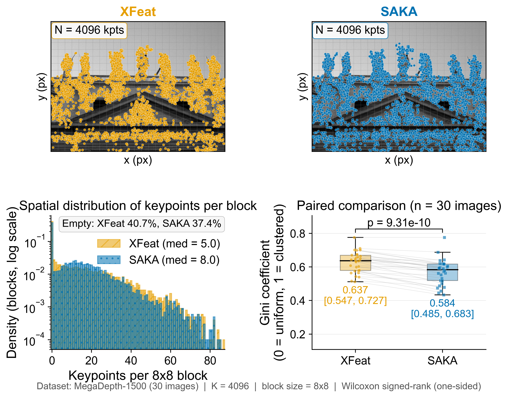
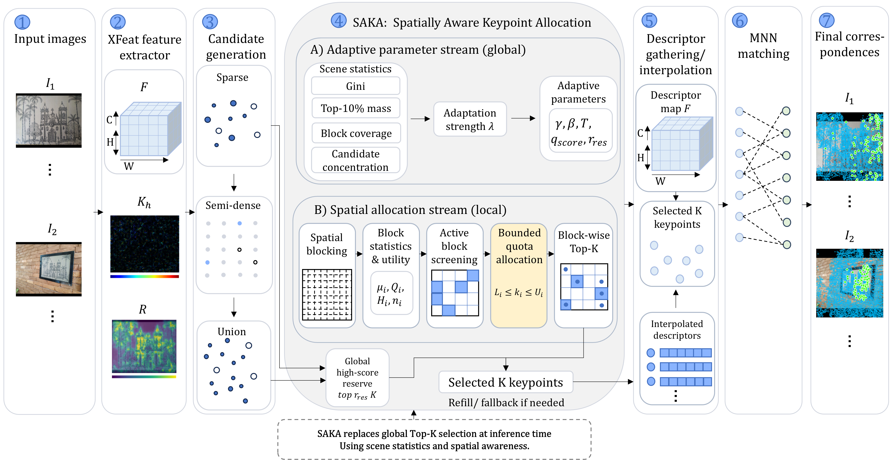

Read the field
Average-pool and clip response maps so regional evidence is robust to isolated peaks.
TL;DR A training-free replacement for global Top-K selection that treats keypoints as a spatial resource.

Lightweight local-feature pipelines typically enforce a fixed keypoint budget through global Top-K selection. When high responses cluster on a textured object or a narrow overlap, the selected descriptors become geometrically redundant. SAKA partitions the score or reliability map into blocks, estimates regional evidence from response magnitude and entropy, and assigns bounded quotas while preserving score order inside each block. Detector weights, descriptors, matching, and geometric verification stay unchanged.
SAKA is an inference-time allocator. It keeps local ranking intact while controlling how much of the fixed budget any block can claim.
Average-pool and clip response maps so regional evidence is robust to isolated peaks.
Combine mean, top-response evidence, entropy, candidate quality, and availability.
Use lower bounds and density caps to balance coverage with reliable candidates.
Select by the original detector score inside each block. Refill only when needed.

SAKA is most helpful when reliable responses are unevenly distributed: indoor scenes, viewpoint changes, and night-time localization.
66.1 → 67.4 with the same 4,096-keypoint budget.
34.5 → 35.6 across 1,500 indoor pairs.
86.7 → 90.8 under appearance change.
Reported values follow the paper's matched baseline–SAKA protocol. Gains are geometry-oriented and can be neutral when Top-K already covers the scene.
Across outdoor viewpoint, indoor, street, and texture-heavy scenes, SAKA broadens the support of selected points and inliers.
@inproceedings{zhao2026saka, title = {SAKA: Spatially Aware Keypoint Allocation for Lightweight Image Matching}, author = {Zhao, Haoran and Chen, Leyan and Wen, Haokai and Cheng, Wentao}, booktitle = {International Conference on Vision, Image and Signal Processing (ICVISP)}, year = {2026}, }